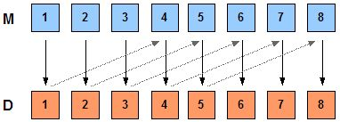
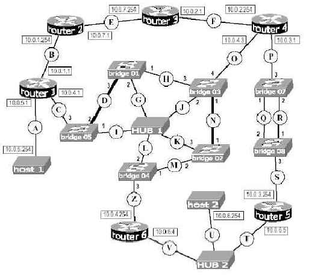

Torna alla pagina di Sistemi per l'elaborazione delle informazioni
:: Temi d'esame di Sistemi - 30/1/2007 ::
Esercizio 1
Un ISP dispone del blocco di indirizzi 198.25.0.0/16, corrispondente a 65536 (216) indirizzi IP. L’ISP desidera partizionare il blocco in 2 parti (ciascuna 1/2 dello spazio di indirizzamento) e assegnarne una all’organizzazione A, poi dividere la seconda in altre 2 parti (ciascuna 1/4 dello spazio di indirizzamento) assegnandone una all’organizzazione B, e finalmente suddividere il rimanente quarto in due parti (ciascuna 1/8 dello spazio di indirizzamento) assegnandole rispettivamente all’organizzazione C e all’organizzazione D. Usando la tecnica del VLSM, specificare le maschere di sottorete equivalenti alle varie partizioni.
SOLUZIONE
Con la tecnica di VLSM posso assegnare maschere di sottorete variabili a seconda delle sottoreti stesse, riservando di conseguenza ad ognuna uno spazio di indirizzamento diverso per gli host.
Per dimezzare lo spazio d'indirizzamento del blocco 198.25.0.0/16 e assegnarlo ad A, stabilisco che la maschera di sottorete di A sia: 255.255.128.0 (in binario 11111111.11111111.10000000.00000000) . Ho quindi dedicato il primo bit del terzo byte per individuare A.
Procedo analogamente con le altre sottoreti: dimezzare lo spazio di indirizzamento della sottorete precedente, si traduce operativamente aggiungendo un bit alla subnet id.
Quindi:
A: Maschera di Sottorete: 255.255.128.0 (11111111.11111111.10000000.00000000)
B: Maschera di Sottorete: 255.255.192.0 (11111111.11111111.11000000.00000000)
C: Maschera di Sottorete: 255.255.224.0 (11111111.11111111.11100000.00000000)
D: Maschera di Sottorete: 255.255.224.0 (11111111.11111111.11100000.00000000)
Le Subnet Id saranno:
A: 198.25.0.0/17
B: 198.25.128.0/18
C: 198.25.192.0/19
D: 198.25.224.0/19
Esercizio 2
Considerate un protocollo Go-Back-N caratterizzato da una finestra w=3 e da uno spazio di 10 bit per il numero di sequenza (0-1023). Supponete che al tempo t il pacchetto atteso abbia numero k, e che il canale NON riordini i messaggi.
- Quali sono i possibili numeri di sequenza degli altri pacchetti che fanno parte della finestra?
- Quali sono i possibili valori dell’ACK che sta tornando al mittente?
SOLUZIONE

1.
I possibili numeri di sequenza degli altri pacchetti che fanno parte della finestra dipendono dalla posizione in cui mi trovo. Quindi dato che le possibili finestre potrebbero essere k-2, k-1, k oppure k-1, k, k+1 oppure k, k+1, k+2, i possibili valori sono k-2, k-1, k, k+1, k+2.
2.
(?) Se prima manda il pacchetto e poi attende la risposta di ACK, vorrà dire che al tempo t sta aspettando l'ACK di k-4.
Esercizio 3
Calcolate i valori del timer di ritrasmissione di TCP (retransmission timeout - RTO)
- Sapendo che RST= 45 ms, e che gli ACK successivi arrivano con ritardi di 15, 24 e 33 ms. Fate le vostre ipotesi sui valori dei parametri.
- Usando l’algoritmo di Jakobson, che calcola RTO come soma pesata della media e della deviazione standard di RTT. Calcolate la stima di RTO con gli stessi dati dell’esercizio e con i pesi g = 2/3, 3 h = 1/3. Fate tutte le ipotesi necessarie
SOLUZIONE
1.
Prima di iniziare, una piccola digressione sull'acronimo RST (http://it.wikipedia.org/wiki/RST_) che penso non centri tanto con l'esercizio (probabilmente voleva scrivere ERTT o RTTE però va bè).
I dati che ci fornisce sono:
- EstimatedRTT della trasmissione precedente
- ACK futuri al tempo t, t+1, t+2
Per risolvere il primo punto usiamo la formula per la variazione del Round Trip Time, ovvero:
EstimatedRTT = (1-x) * ERTT(t-1) + (x)*SampleRTT
con x = 0.1 (valore tipico di misura preso dalle sue dispense)
Risolviamo i vari casi:
(1) RTT'= 45ms * (0.9) + 15ms * (0.1) = 42ms
Il testo dell'esercizio però mi chiede di calcolare il timeout (RTO) per cui basta semplicemente raddoppiare l'RTT risultante (2 è ancora una volta un valore consigliato, una sorta di margine di sicurezza) per cui: Timeout=2 * 42ms = 84ms
Si procede allo stesso modo per l'ACK2 e ACK3
(2) RTT = 42 * 0.9 + 24 * 0.1 = 40.2 ms
Timeout = 80.4 ms
(3) RTT = 40.2 * 0.9 + 33 * 0.1 = 39.5 ms
Timeout= 79 ms
Alcune osservazioni sui valori. Usando la formula della media variabile pesata esponenzialmente ci si accorge che i valori di timeout diminuiscono di poco ad ogni passaggio, anche a fronte di un aumento del ritardo dell'ACK. Questo perchè il timeout non risponde rapidamente ai cambiamenti di RTT. Un altro fattore da osservare, è che con quella formula i vecchi valori, a lungo andare, avranno un peso che decresce continuamente, fino allo zero (ecco perchè è chiamata esponenziale).
2.
Esercizio 4
Considerando la rete in figura, scrivete la tabella d’instradamento relativa al router R1. (I collegamenti rappresentati come più spessi hanno capacità più elevate.

SOLUZIONE
| DESTINAZIONE
| ROUTER
| INTERFACCIA
|
| 10.0.5.254
| ...
| A oppure 10.0.5.1
|
| 10.0.6.254
| 10.0.1.254
| B oppure 10.0.1.1
|
| 10.0.6.254
| 10.0.4.254
| C oppure 10.0.4.1
|
| 10.0.6.254
| 10.0.4.3
| C oppure 10.0.4.1
|
Non metto in tabella quello di default (0.0.0.0) perché non si collega ad internet.
Torna alla pagina di Sistemi per l'elaborazione delle informazioni